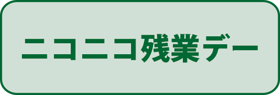
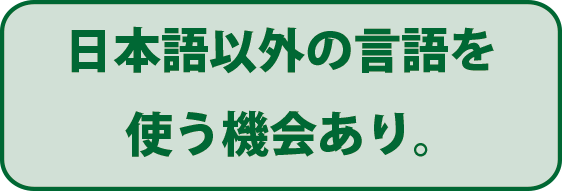

[業種]放送/通信/その他商社/その他製造/広告 [本社]横浜市
株式会社デロンデロンデロン
(略称 deron x3)
デロンデロンデロン
deronderonderon
新卒
採用人数 今年度予定 2名〜
初年度月収例 月45万円程度(月給制)
選考例 WEBプレエントリー(締切12月下旬)
エントリーシート(締切12月下旬)
説明会(1月)
面接(2月)
内々定(5月)
 

とにかく「ナカマ」を大事にする人を求めています。(東大卒大歓迎！）当社は今人材不足に陥っています。澤井環に忠誠を尽くし死ぬまで自分の才能を最大限に活かし、新しい事にチャレンジしてくださることを期待しています。 気分にもよりますが、大体皆様のことを期待しておりません。 採用条件は、「学生団体に所属している人」「半年以内にTOEICを受験した人※300点以上でOK」「ナカマが好きな人」「東大生」

職種 総合職
勤務地 神奈川県横浜市
勤務時間 6:00〜23:00 (残業含まず)
採用スケジュール
デロナビよりエントリー→自社説明会→必要書類提出→TOEIC→面接(澤井との一対一面接)→内々定！
給与
院卒：月給470,000円
大卒：月給450,000円
諸手当
通勤費手当、自炊手当、東大卒手当
昇給 年1回(4月)
賞与 年2回(6月、12月)
休日休暇 完全週休1日制(日)、祝日、年末年始、特別休日ほか
有給休暇(初年度5日)、育児休職制度、東大休暇(初年度40日)
保険 各種社会保険完備
福利厚生 社員旅行(年１回)、独身寮

東京大学

©deronderonderon. ALL RIGHTS RESERVED. powered by deron designs.